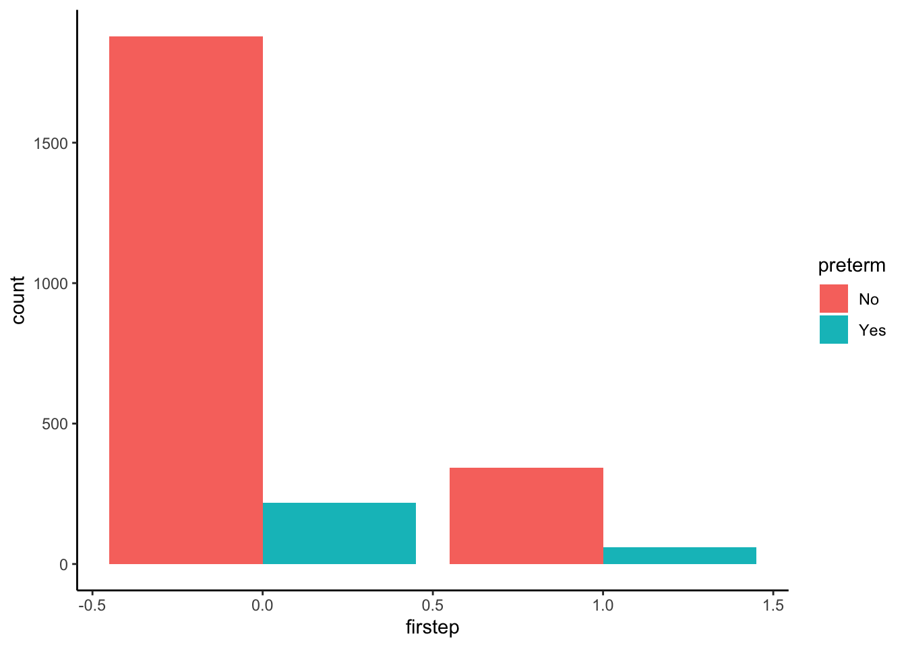
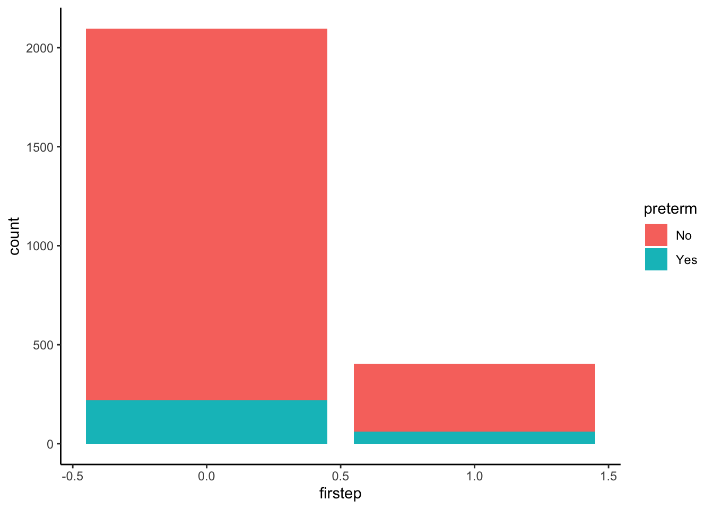
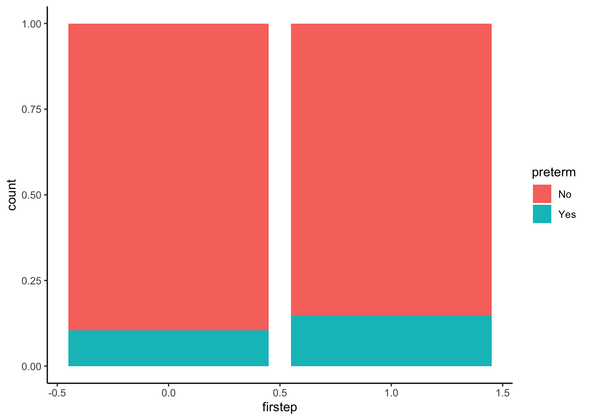
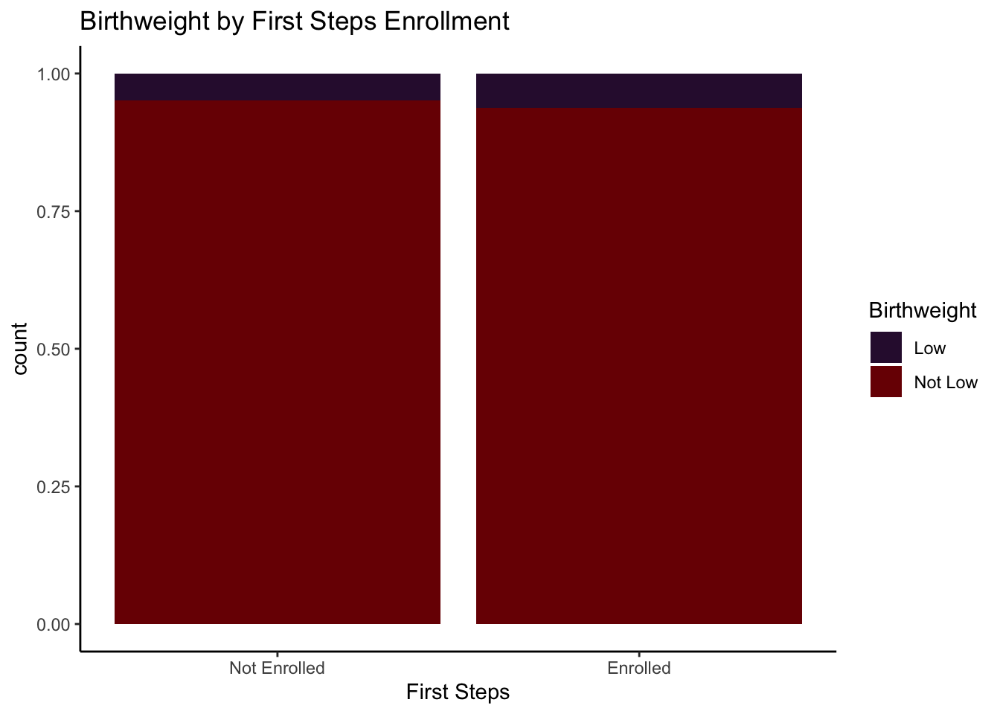

You can download a template file to work with here.
File organization: Save this file in the “Activities” subfolder of your “STAT155” folder.
Learning goals
By the end of this lesson, you should be able to:
Distinguish between probabilities and odds, and convert one to the other
Make appropriate visualizations for displaying relationships between multiple categorical variables (mosaic plots, stacked bar plots, etc.)
Readings and videos
Before class you should have read:
Reading: Sections 2.5, and the Section 6.2 introduction in the STAT 155 Notes
Exercises
Context: To begin formally learning about probabilities and odds, we’ll be exploring a dataset containing information on 2,500 singleton (i.e. not twins) births in King County, Washington in 2001. Each row contains information from one birth parent, and there are no birth parents included in the dataset more than once.
The main research question this study aimed to answer was whether the First Steps program in King County improved birth outcomes for women from socioeconomically disadvantaged backgrounds. We’ll attempt to answer this research question using the information available to us as we go!
The variables in this dataset we’ll look at more closely for each birth parent are:
age: age of birth parent at time of birth (years)
parity: number of children the birth parent has given birth to before
married: indicator for whether the birth parent is currently married (1 = yes, 0 = no)
bwt: birthweight of the child (in grams)
smokeN: number of cigarettes smoked per day during pregnancy
drinkN: number of alcoholic drinks consumed per day during pregnancy
firstep: indicator for whether the birth parent participated in the “First Steps” pregnancy program
gestation: number of weeks at which birth parent gave birth
Run the code below to read in the firststeps data, and create a few new variables that we’ll explore as well.
library(readr)library(ggplot2)library(dplyr)
Attaching package: 'dplyr'
The following objects are masked from 'package:stats':
filter, lag
The following objects are masked from 'package:base':
intersect, setdiff, setequal, union
firststeps <-read_csv("https://mac-stat.github.io/data/firststeps.csv") %>%mutate(firstchild =ifelse(parity ==0, "Yes", "No"), # Is this the first child this parent has had?low_bwt =ifelse(bwt <2500, "low", "not low"),preterm =ifelse(gestation <37, "Yes", "No")) # short gestational period
Rows: 2500 Columns: 17
── Column specification ────────────────────────────────────────────────────────
Delimiter: ","
chr (2): sex, race
dbl (15): plural, age, parity, married, bwt, smokeN, drinkN, firstep, welfar...
ℹ Use `spec()` to retrieve the full column specification for this data.
ℹ Specify the column types or set `show_col_types = FALSE` to quiet this message.
Exercise 1: Exploring First Steps enrollment and Gestational Age
A baby born prior to 37 weeks is considered premature. In figuring out whether we have evidence that the First Steps program is associated with better birth outcomes than those not in the First Steps program, we can look at whether the individuals in the program are more likely to have preterm babies.
Below, we make a 2x2 table in R:
# 2x2 Table: preterm vs. First Stepsfirststeps %>%count(preterm, firstep)
You may be wondering why this is called a 2x2 table, when it looks as though the table has four rows and three columns. The data can be re-arranged (and usually is, in a formal report) as follows…
table(firststeps$preterm, firststeps$firstep)
… but it’s much cleaner to code up the original way!
How many birth parents were enrolled in the First Steps program? Which rows did you use to calculate this number?
What percentage of people in the study were enrolled in the First Steps program? Recall: there were 2500 participants! You can confirm this by adding up the entire third column of the table
How many birth parents who were enrolled in First Steps had a premature baby?
What percentage of birth parents in First Steps had a premature baby? Think carefully about the numerator and denominator you use to calculate this!
What percentage of birth parents who had a premature baby were enrolled in First Steps? Think carefully about the numerator and denominator you use to calculate this!
Congratulations! If you’ve made it to this point, you already intuitively know what marginal and conditional probabilities are. Formally,
a marginal probability, denoted \(P(A)\) for an event \(A\), is the probability that \(A\) occurs overall. You calculated the marginal probability that people were enrolled in First Steps in part (b)! In this case, the denominator used to calculate the probability was the total number of people in the study.
a conditional probability, denoted \(P(A | B)\) for events \(A\) and \(B\), is the probability that \(A\) occurs given that event \(B\) occurs. You calculated the conditional probability that a premature baby was born given that a parent was in First Steps in part (d)! In this case, the denominator used to calculate the probability was the total number of birth parents in the First Steps program. You also calculated a conditional probability in part (e).
Using formal probability notation, write the probabilities you calculated in parts (b), (d), and (e) as
\(P(First Steps)\) = ___
\(P(Preterm | First Steps)\) = ___
\(P(___ | ___)\) = ___
Note that the conditional probabilities calculated in parts (d) and (e) are not the same! This is because which event you condition on alters the denominator, and the event you’re interested in alters the numerator.
To determine if gestational age differed by enrollment in First Steps, we’ll want to calculate the conditional probability that a baby is born prematurely given First Steps enrollment (done!), and given that a parent is not enrolled in First Steps. Use the 2x2 table to calculated this conditional probability.
\(P(Preterm | Not in First Steps)\) = ___
A ratio of conditional probabilities, where the conditioning event is the same for both, tells us how many times more likely an event is to occur for one group compared to another. Calculate how many times more likely a birth parent enrolled in First Steps is to have a premature baby compared to birth parents not enrolled in First Steps.
\[
\frac{(Preterm | First Steps)}{P(Preterm | Not in First Steps)} =
\]
Write a two-sentence summary, appropriate for a general audience, summarizing your results in terms of a ratio of probabilities. Does gestational age appear to differ greatly by First Steps enrollment? What does this imply about the effectiveness of the First Steps program, if anything?
To go along with your summary, let’s make a visualization! There are three basic options for visualization two categorical variables. All are perfectly valid, but some may be more useful to read than others, and display different information.
You’ll see one other fancier option (called a mosaic plot) in the next activity.
# Side-by-side bar chartfirststeps %>%ggplot(aes(firstep, fill = preterm)) +geom_bar(position ="dodge") +theme_classic()# Stacked bar chartfirststeps %>%ggplot(aes(firstep, fill = preterm)) +geom_bar() +theme_classic()# Stacked relative frequency bar chartfirststeps %>%ggplot(aes(firstep, fill = preterm)) +geom_bar(position ="fill") +theme_classic()
Bonus Question: Which of the above three plots allows you to directly see the conditional probabilities we calculated previously?
Place your answer here
Exercise 2: Exploring First Steps enrollment and Low birthweights
Another birth outcome we can consider when comparing those enrolled in the First Steps program to those not enrolled is birth weight. A baby is considered to have low birth weight when birth weight is less than 2500 grams.
Fill in the code below to make a table comparing low_bwt to firsteps.
# 2x2 Table: low_bwt vs. First Steps
Using the table from part (a), calculate the following conditional probabilities:
\(P(Low birth weight | First Steps)\) = ___
\(P(Normal birth weight | First Steps)\) = ___
\(P(Low birth weight | Not in First Steps)\) = ___
\(P(Normal birth weight | Not in First Steps)\) = ___
An additional numerical summary that is often useful when working with indicator variables is odds. Odds are defined as
\[
Odds = \frac{p}{1 - p}
\]
where \(p\) is the probability that an event occurs. Therefore, if we know \(p\), we can calculate the odds that an event happens! Similarly, if we know the odds, we can calculate \(p\) using
\[
p = Odds / (1 + Odds)
\]
We can also calculate odds from our 2x2 (or 3x2, 4x2, …) tables. In colloquial terms, probabilities are “yes”’s over “total”’s, and odds are “yes”’s over “no’s”. In pseudo-math:
\[
p = \frac{Yes}{Total}, \quad Odds = \frac{Yes}{No}
\] We’ll see why odds are especially useful when we have binary outcome variables in a regression model in the next activity. For now, note that they’re also commonly used in lots of contexts: sports, gambling, case-control studies, etc.
Using your answer to part (b), calculate the following odds
\(Odds(Low birth weight | First Steps)\) = ___
\(Odds(Normal birth weight | First Steps)\) = ___
\(Odds(Low birth weight | Not in First Steps)\) = ___
\(Odds(Normal birth weight | Not in First Steps)\) = ___
A ratio of odds (called an odds ratio, unsurprisingly) tells us how many times higher or greater the odds are that an event occurs, comparing one group to another. This might sound irritatingly circular. The key here is that while odds ratios do allow us to compare binary/indicator outcomes from one group to one another, they do not tell us how much more likely an event is to occur comparing those same groups. This is distinct from ratios of probabilities!
Calculate the ratio of the odds of having a low-birth-weight baby, comparing those in the First Steps program to those not in the First Steps program (i.e., how many times higher/lower is the odds of having a low-birth-weight baby among those in First Steps as compared to those not in First Steps?)
Write a two-sentence summary, appropriate for a general audience, summarizing your results in terms of an odds ratio. Does birth weight appear to differ greatly by First Steps enrollment? What does this imply about the effectiveness of the First Steps program, if anything?
To go along with your summary, add code below to make one of the three visualization options we tried out in Exercise 1.
# Insert code here...
Exercise 3: Conditional vs. Marginal probabilities
Suppose we select a person at random from the entire global population. For each of the following probabilities, which do you think is bigger? Explain your reasoning.
P(lung cancer) or P(lung cancer | smoker)
Your response here
P(likes McDonald’s) or P(likes McDonald’s | vegetarian)
Your response here
P(smart | Mac grad) or P(Mac grad | smart)
Your response here
Exercise 4: Probability practice
Let’s explore whether birthweight of a baby varies by whether or not it was the first child that a mother had, and whether this relationship differs by First Steps enrollment. We make a table below:
firststeps %>%count(firstchild, low_bwt, firstep)
What is the probability that a mother enrolled in First steps who is having their first child, has a baby who is born at a low birthweight? Calculate your answer, and write it using formal probability notation.
P(___ | ___) = ?
What is the probability that a mother not enrolled in First steps who is having their first child, has a baby who is born at a low birthweight? Calculate your answer, and write it using formal probability notation.
P(___ | ___) = ?
What is the probability that a mother’s first child has a low birthweight? Calculate your answer, and write it using formal probability notation.
P(___ | ___) = ?
How many times more likely is a child to be born at a low birthweight, comparing children who are the first born to those not first born?
P(___ | ) / P( | ___) = ?
Reflection
Summarize key concepts from today. What ideas were challenging? What do you want to be sure to practice more?
Response: Put your response here.
Render your work
Click the “Render” button in the menu bar for this pane (blue arrow pointing right). This will create an HTML file containing all of the directions, code, and responses from this activity. A preview of the HTML will appear in the browser.
Scroll through and inspect the document to check that your work translated to the HTML format correctly.
Close the browser tab.
Go to the “Background Jobs” pane in RStudio and click the Stop button to end the rendering process.
Navigate to your “Activities” subfolder within your “STAT155” folder and locate the HTML file. You can open it again in your browser to double check.
Solutions
Exercise 1: Exploring First Steps enrollment and Gestational Age
# 2x2 Table: preterm vs. First Stepsfirststeps %>%count(preterm, firstep)
# A tibble: 4 × 3
preterm firstep n
<chr> <dbl> <int>
1 No 0 1879
2 No 1 343
3 Yes 0 218
4 Yes 1 60
343 + 60 = 403 parents were enrolled in the First Steps program. I used both rows of the table where firstep = 1.
16.12% of people in the study were enrolled in First Steps!
403/2500
[1] 0.1612
60 birth parents
14.89% of birth parents in First Steps had a premature baby.
60/403
[1] 0.1488834
The total number of birth parents who had a premature baby was 218 + 60 = 278. Of those. 60 were enrolled in First Steps. Therefore, 21.58% of birth parents who had a premature baby were enrolled in First Steps.
60/278
[1] 0.2158273
Using formal probability notation, we can write
\(P(First Steps)\) = .1612
\(P(Preterm | First Steps)\) = .1488
\(P(First Steps | Preterm)\) = .2158
\(P(Preterm | Not in First Steps)\) = 218 / (218 + 1879) = 0.103958
\[
\frac{(Preterm | First Steps)}{P(Preterm | Not in First Steps)} = .1488 / 0.103958 = 1.43
\]
Parents in this study in the First Steps program are 1.43 times more likely to have a premature birth than those not enrolled in the First Steps program, indicating that gestational age does differ by First Steps enrollment. This implies that enrollment in the First Steps program may not be associated with better birth outcomes, as measured by gestational age.
Note: However, you may argue that this is not a fair comparison, or that this summary is not what researchers were actually interested in! Ideally, we would compare birth outcomes from mothers in the First Steps program to the birth outcomes from those same mothers not in the First Steps program, to determine if the program made a positive impact. This idea hints at a sub-field of statistics called causal inference and the idea of a counterfactual (“what would have happened if…”). Take more statistics classes to learn about other methods for approaching this question!
# Side-by-side bar chartfirststeps %>%ggplot(aes(firstep, fill = preterm)) +geom_bar(position ="dodge") +theme_classic()

# Stacked bar chartfirststeps %>%ggplot(aes(firstep, fill = preterm)) +geom_bar() +theme_classic()

# Stacked relative frequency bar chartfirststeps %>%ggplot(aes(firstep, fill = preterm)) +geom_bar(position ="fill") +theme_classic()

Bonus Question: Which of the above three plots allows you to directly see the conditional probabilities we calculated previously?
The stacked relative frequency bar chart!
Exercise 2: Exploring First Steps enrollment and Low birthweights
# 2x2 Table: low_bwt vs. First Stepsfirststeps %>%count(low_bwt, firstep)
# A tibble: 4 × 3
low_bwt firstep n
<chr> <dbl> <int>
1 low 0 102
2 low 1 25
3 not low 0 1995
4 not low 1 378
\(Odds(Low birth weight | Not in First Steps)\) = 0.049 / (1 - 0.049) = 0.05152471
\(Odds(Normal birth weight | Not in First Steps)\) = 0.951 / (1 - 0.951) = 19.40816
0.06609808/0.05152471
[1] 1.282842
The odds of having a low birth weight baby are 1.28 times higher for those enrollment in First Steps compared to those not in First Steps. Just as in Exercise 1, this implies that the First Steps program may not be associated with improved birth outcomes (with the same caveats as given in the answer to 1 (h)).
To go along with your summary, add code below to make one of the three visualization options we tried out in Exercise 1.
# Stacked relative frequency bar chart (with some fancy aesthetics)firststeps %>%mutate(Birthweight = low_bwt %>% stringr::str_to_title()) %>%ggplot(aes(firstep, fill = Birthweight)) +geom_bar(position ="fill") +theme_classic() +scale_fill_viridis_d(option ="H") +labs(x ="First Steps", title ="Birthweight by First Steps Enrollment") +scale_x_continuous(breaks =c(0,1), labels =c("Not Enrolled", "Enrolled"))

Exercise 3: Conditional vs. Marginal probabilities
Suppose we select a person at random from the entire global population. For each of the following probabilities, which do you think is bigger? Explain your reasoning.
P(lung cancer | smoker) is likely bigger, since lung cancer is more rare in the general population than it is among smokers.
P(likes McDonald’s) is likely bigger, since vegetarians don’t likely like McDonald’s very much (few options that they can eat).
P(smart | Mac grad) is likely bigger, because there are very few Mac grads relative to the global population. Lots of people are smart, few are Mac grads.
Exercise 4: Probability practice
Let’s explore whether birth weight of a baby varies by whether or not it was the first child that a mother had, and whether this relationship differs by First Steps enrollment. We make a table below:
firststeps %>%count(firstchild, low_bwt, firstep)
# A tibble: 8 × 4
firstchild low_bwt firstep n
<chr> <chr> <dbl> <int>
1 No low 0 43
2 No low 1 13
3 No not low 0 1080
4 No not low 1 198
5 Yes low 0 59
6 Yes low 1 12
7 Yes not low 0 915
8 Yes not low 1 180
What is the probability that a mother enrolled in First steps who is having their first child, has a baby who is born at a low birthweight? Calculate your answer, and write it using formal probability notation.
P(Low Birthweight | First Steps, First Child) = 12 / (12 + 180) = 0.0625
What is the probability that a mother not enrolled in First steps who is having their first child, has a baby who is born at a low birthweight? Calculate your answer, and write it using formal probability notation.
P(Low Birthweight | Not in First Steps, First Child) = 59 / (59 + 915) = 0.06057495
What is the probability that a mother’s first child has a low birthweight? Calculate your answer, and write it using formal probability notation.